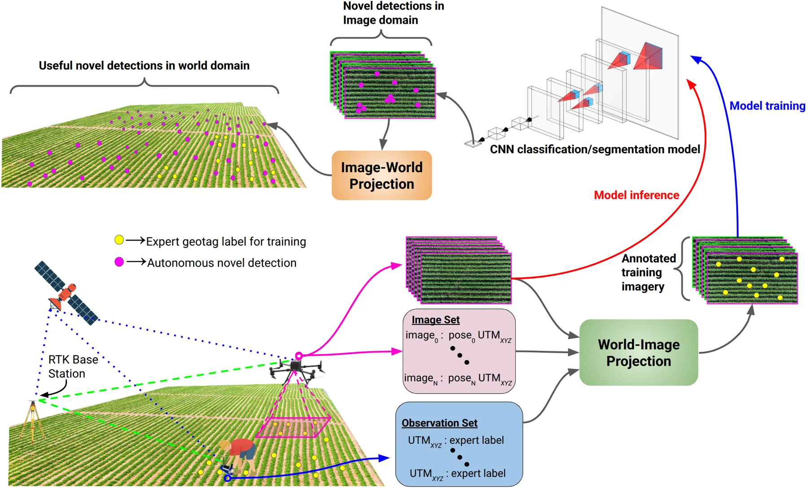
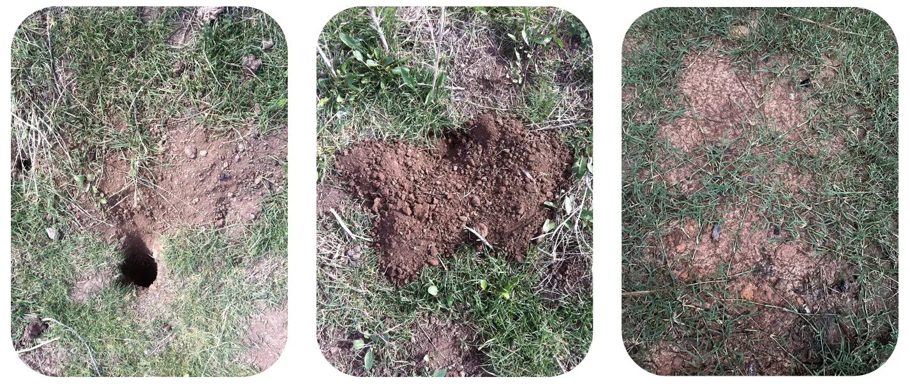
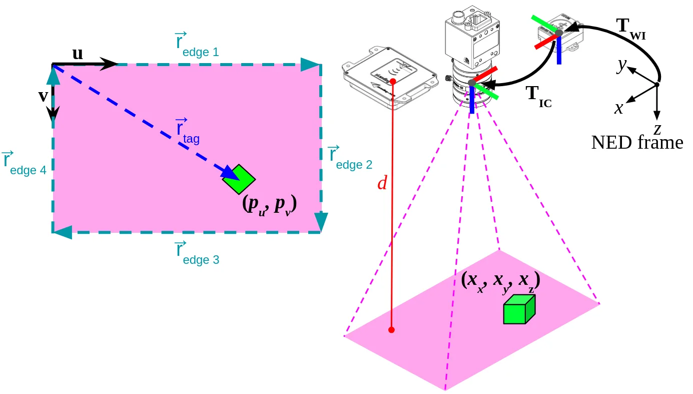
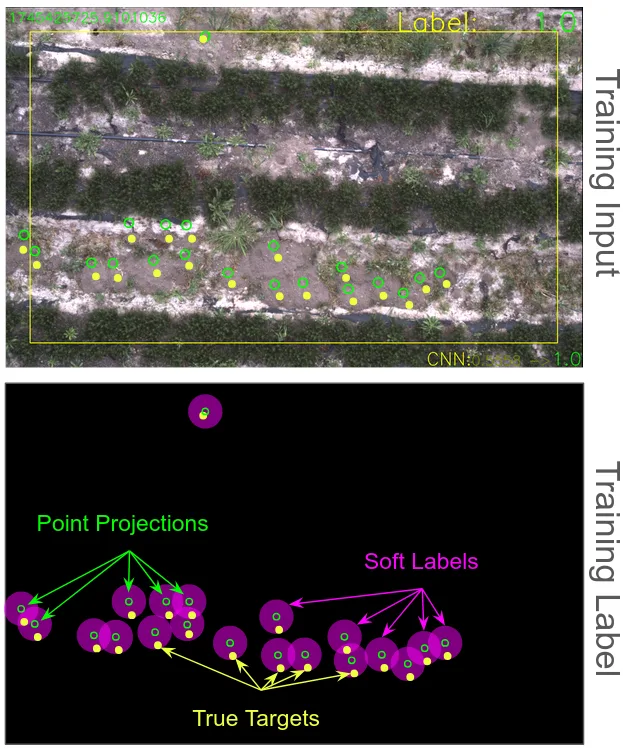
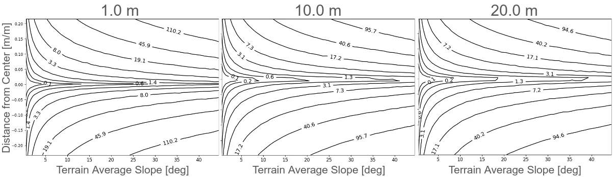
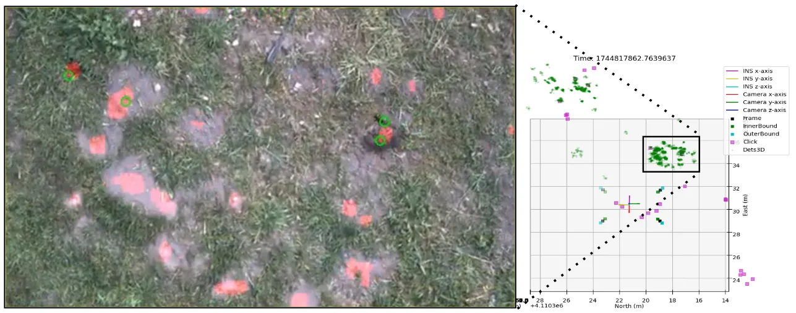

BirdsEye：面向野外无人机系统的现场地理标注与位姿不确定度预算
Human-in-the-Loop Geospatial Annotation for Rapid Dataset Construction in Field-Deployed UAV Systems
把标注的坐标系统反过来：人在地面记录世界坐标、投影几何负责把它映射回每一帧，并用同一条线性化关系的逆解回答“要多准的位姿才能满足标注容差”。
projection error
throughput gain
作者、单位与技术谱系 · Research context
作者与单位
研究脉络
- 直接地理参考精度基准（Liu et al., 2022；Turner et al., 2013）上游方法与问题来源关系：本文把它们的厘米级精度与粗 GSD 作为对照与动机[arXiv 官方 HTML v1]
- 图像空间标注平台（Labelbox、CVAT、Roboflow）上游范式（被反转的对象）关系：本文把“图像内标注”这一默认工作流整体反转成现场标注[arXiv 官方 HTML v1]
- 弱监督语义标注与无监督域适应（Yao et al., 2016；Kim et al., 2021）上游方法（另一条降本路线）关系：同为降低人工标注量的路线，本文用几何而非学习来减少标注[arXiv 官方 HTML v1]
- BirdsEye（本文）本篇推进关系：在坐标反转之上补齐位姿-像素不确定度映射与其逆解[arXiv 官方 HTML v1]
合作网络
- 论文署名与单位BirdsEye 论文署名作者 → 加州大学圣克鲁兹分校电气与计算机工程系关系：署名单位[arXiv 官方 HTML v1]
- 论文与其官方仓库BirdsEye 论文作者 → github.com/harelab-ucsc/birdseye（pose-bound 分支）关系：官方发布仓库[arXiv 官方 HTML v1]
- 经费支持关系USDA NIFA「Engineering for Precision Water and Crop Management」项目（2023-67022-40557）与 UCSC 农业试验站 → BirdsEye 研究关系：资助关系[arXiv 官方 HTML v1]
- 实验场地合作Pie Ranch 与 Jacobs Farms / del Cabo → BirdsEye 的三站点现场验证关系：实验场地合作（致谢声明）[arXiv 官方 HTML v1]
作者、单位、资助与场地信息均来自论文作者块、Funding 与致谢小节；技术接续来自相关工作引用。除署名、资助、官方仓库与致谢中明示的合作外，未发现公开证据支持的师生或机构合作关系，相关推断不作补写。
方法本质拆解 · What actually changed
是不是微调？
不是训练新的几何模型：RTK、相机标定与时间同步属于工程标定，投影与不确定度模型是解析推导；下游检测器由该流程产出的 12,524 帧训练，但论文明确声明“该实验测的是数据集而不是检测器”，不对检测器结构作任何主张。
有没有额外约束？
几何侧假设每帧可视地面可近似为一个平面、深度由雷达高度计给出单值；不确定度侧只保留一阶项，并按六个逐轴方差线性叠加，设计条件要求最坏成像点也必须满足容差，等价于在噪声预算空间里取一个半空间（迹条件）或精确地取最大特征值（带一次特征分解）。
推理/后端到底做了什么？
推理链是“现场记录世界坐标 → 投影雅可比传播到像素 → 生成软标签”，没有新的后端优化、全局平差或因子图；部署侧的实时性来自投影本身是闭式映射而不是迭代求解。
方法本质是什么？
把标注的坐标系统反过来：人只在地面录一次世界坐标，几何负责把它映射到所有可见帧，从而把重复的图像内标注换成一次性现场记录；同一条线性化关系再被反向使用，把“标注容差”换算成“平台必须达到的位姿精度”，使这篇工作从分析工具变成设计工具。
输入=现场 RTK 世界坐标 + 标定相机位姿及其协方差；改变的位置=标注所处的坐标空间（图像→世界）与平台精度预算；动作=投影雅可比的一阶传播 + 逆解设计条件；效果=厘米级投影与约 25.5× 标注吞吐，同时给出近似失效的坡度与扰动边界。

桥接价值Bridge
桥接价值
这项工作表面上是数据集构建工具，实质是把“观测不确定度如何进入系统设计”做成了一条可逆的链路：位姿协方差 Σ0 经投影雅可比一阶传播成像素协方差 Σu，而 Σu 的迹对六个逐轴位姿方差是线性的，于是标注容差在噪声预算空间里定义了一个半空间，可以反过来筛传感器、算最大容许缩放（κ*）并做逐轴分配。这与我们在 GNSS/INS 与视觉融合里“把误差预算写进传感器选型与外参精度指标”的诉求完全同源。更难能可贵的是它诚实报告了线性化的失效边界：坡度超过约 10° 后地形误差超过运动误差，扰动放大超过 10 倍后（5 m 高度）解析与 Monte Carlo 开始分叉。
方法与模块Method
方法摘要
硬件侧是 RTK 定位 + 雷达高度计 + 标定相机 + 时间同步，运行时以 5 Hz 采集、每个机动至少 120 s；软件后台把目标世界坐标经标定参数投影到每一帧，产出以 3σ 30 px 为半径的软标签。不确定度侧用位姿协方差 Σ0 = diag(0.0001, 0.0001, 0.0036, 0.0016, 0.0016, 0.0169)（姿态项以度² 给出、传播前转弧度²），在平坦地面 67 cm 网格测试点上用投影雅可比做一阶传播，得到像素不确定度椭圆；再用 0.1–100 共 25 档对数尺度因子放大 Σ0 做敏感性扫描，以对称 KL 散度（sKLD）比较解析模型与 Monte Carlo 集合的一致性。反向使用时，迹条件给出半个空间的容许预算，最大均匀缩放 κ* 有闭式解，等预算份额分配给出唯一逐轴容差（表 3）。
可迁移模块
① “世界坐标标注 + 投影回图像”的坐标反转范式，可用于任何需要在图像空间批量生成真值的外场任务（巡检、农业、设施检查）；② 一阶位姿→像素不确定度传播与它的反解，可直接搬来做外参/标定精度预算，判断某套硬件是否配得上给定的任务容差；③ 用 sKLD 而非目视对比来判定解析近似何时失效，是评估任何线性化模型的轻量做法；④ “先密封 3 个操作点、再去看留出站点”的预注册评测协议，以及把密度相关的 PUL 指标（GMCF/F1）与可迁移指标（召回）分开报告的纪律，值得在我们自己的检测/定位评测里照搬。

证据Evidence
关键证据与数字
① 表 1 投影误差：10 m 悬停 0.038 m / 18.8 px（σ 0.019 m / 9.7 px），20 m 悬停 0.043 m / 9.8 px（σ 0.037 m / 8.4 px）；但持续偏航时恶化到 0.191 m / 82.2 px（10 m）与 0.179 m / 41.1 px（20 m），有效 GSD 为 2.219±0.138 mm @10 m、4.376±0.021 mm @20 m。② 表 2：在 λ_u,target = 100 px²（3σ = 30 px）下，迹条件声称 10 m 的最坏像素方差 108.61 px²、κ*=0.9207（比精确条件保守 1.450×），把部署预算拒绝 8%；精确最大特征值条件给出 74.92 px²、κ*=1.335（接受，1.34× 余量）；20 m 时两式一致（46.42/2.154 与 26.36/3.794），说明保守性只在贴近边界时才有决策意义。③ 表 3：逐轴预算显示高度不确定度占部署总最坏像素方差的 42.9%，是主导项。④ 表 6/表 7：留出农场 2,117 帧中 151/161 个 geotag 在视场内，三个预注册臂召回 0.563–0.887；人工裁定后最大 F1 臂的 GMCF 从 0.522 升到 0.832–0.867（跨三种平局约定）。⑤ 效率：三站点 12,524 帧 / 55,600 标注 / 约 12 小时 / 2 名工人，相对人工标注基线约 25.5×。
边界与下一步Limits & Next Step
边界与风险
作者明确承认：① 投影依赖局部平面 + 单一雷达深度估计，坡度约 10° 以上地形误差即超过运动误差（典型机械化农机在 13%/7.41° 以上坡度已不可用，所以该包络对农业尚够）；② 一阶线性化在扰动放大超过 10 倍后（5 m AGL）与 Monte Carlo 分叉；③ 设计条件在天底、局部平面前提下成立，斜视或地面假设被破坏时增益向量随之改变，预算不可照用；④ 田间研究只用了单一人工标注基线与单一农业检测任务。评测侧还有一个论文自己揭示的风险：验证航次的 geotag 密度是测试航次的 3.253×（0.232 对 0.071 每帧），而 GMCF 是 positive-unlabeled 指标、偏差随密度变化，因此 GMCF/F1 跨站点不可比（留出站点上 GMCF 平均 −0.176、召回反而 +0.231），只有召回可迁移。待核验：约 330 GB 影像数据集需向作者申请、本次未能核验内容；解析界的“最多保守两倍”是在本文几何与容差下验证的，其他视场与高度需重算。
下一步实验
① 把“位姿协方差 → 像素/量测不确定度”的一阶传播及其逆解写成我们传感器选型与外参标定的检查项，先在一套已有 PPP/INS + 相机配置上重算可容许预算；② 在斜视与起伏地形下重算增益向量，验证其设计条件是否仍保守，这直接决定该方法能否离开平原农业场景；③ 复现“预注册操作点 + 留出站点 + 密度修正”的评测协议，用于我们自己检测与定位结果的跨站点可比性；④ 承接作者指出的扩展方向——用显式三维几何 + 射线-表面求交替代平面近似，这正是我们熟悉的几何模块可以接手并验证增益的位置。
{kind=link}

{kind=link}

{kind=link}

{kind=link}
